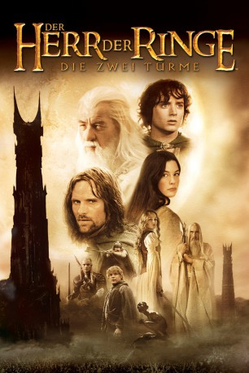

Auszeichnungen: 2 Oscars gewonnen für 4 Oscars nominiert 1 BAFTA-Awards gewonnen
 gesehen am 01.11.2015
gesehen am 01.11.2015Alternativ: The Lord of the Rings: The Two Towers
Auszeichnungen: 2 Oscars gewonnen für 4 Oscars nominiert 1 BAFTA-Awards gewonnen gesehen am 01.11.2015
 
 IMDB-Wertung: 8.7 / 10
IMDB-Wertung: 8.7 / 10  IMDB-TOP-Platzierung: 15
IMDB-TOP-Platzierung: 15  Metascore:
Metascore: 
Der Weg der Gefährten hat sich geteilt. Ringträger Frodo und sein treuer Begleiter Sam treffen in den Bergen von Emyn Muil auf Gollum, dem einst Bilbo Beutlin den Einen Ring wegnahm. Gollums Versuch, den mächtigen Ring von Frodo zu stehlen, misslingt, doch die Hobbits bringen es nicht übers Herz, die Kreatur zu töten. Stattdessen soll Gollum die beiden nach Mordor an die Pforten von Barad-Dûr, Saurons Festung, führen, wo Frodo den Ring vernichten will. Währenddessen folgen Aragorn, Elben-Bogenschütze Legolas und Zwerg Gimli den Spuren der von Orks verschleppten Hobbits. Im Menschenkönigreich Rohan ersuchen sie Unterstützung. Doch König Theoden steht unter einem tödlichen Bann Saurons. Erst als Gandalf als wiedergeborener weißer Zauberer zurückkehrt, wendet sich das Blatt. Er befreit Theoden von dem Fluch und bringt die Menschen von Rohan hinter sich. Unterdessen rückt Saurons Verbündeter Saruman mit einer 10.000 Mann starken Armee von Uruk-hais in RIchtung der Menschenstadt vor...
Jahr: 2002
Dauer: 179 Minuten
FSK: 12
Land: USA Studio: New Line CinemaTonspuren: DTS-HD - ,
Untertitel: Deutsch, Englisch,
Auflösung: 1080p (1920x1080) Größe: 59084 MB
Genre: Drama, Abenteuer, Fantasy
Regisseur:  Peter Jackson
Peter Jackson
Drehbuch: J.R.R. Tolkien, Fran Walsh, Philippa Boyens, Stephen Sinclair, Peter Jackson
Soundtrack: Howard Shore
Darsteller:
 Sean Astin als Sam
Sean Astin als Sam Sala Baker als Man Flesh Uruk
Sala Baker als Man Flesh Uruk Cate Blanchett als Galadriel
Cate Blanchett als Galadriel Orlando Bloom als Legolas
Orlando Bloom als Legolas Billy Boyd als Pippin
Billy Boyd als Pippin Jed Brophy als Sharku / Snaga
Jed Brophy als Sharku / Snaga Brad Dourif als Wormtongue
Brad Dourif als Wormtongue Bernard Hill als Theoden
Bernard Hill als Theoden Christopher Lee als Saruman
Christopher Lee als Saruman Nathaniel Lees als Ugluk
Nathaniel Lees als Ugluk Ian McKellen als Gandalf
Ian McKellen als Gandalf Dominic Monaghan als Merry
Dominic Monaghan als Merry Viggo Mortensen als Aragorn
Viggo Mortensen als Aragorn Miranda Otto als Eowyn
Miranda Otto als Eowyn John Rhys-Davies als Gimli / Voice of Treebeard
John Rhys-Davies als Gimli / Voice of Treebeard Andy Serkis als Gollum
Andy Serkis als Gollum Liv Tyler als Arwen
Liv Tyler als Arwen Karl Urban als Eomer
Karl Urban als Eomer Stephen Ure als Grishnakh
Stephen Ure als Grishnakh Hugo Weaving als Elrond
Hugo Weaving als Elrond David Wenham als Faramir
David Wenham als Faramir Elijah Wood als Frodo
Elijah Wood als Frodo Phil Grieve als Hero Orc
Phil Grieve als Hero Orc John Noble als Denethor, extended edition
John Noble als Denethor, extended edition Alistair Browning als Damrod , uncredited
Alistair Browning als Damrod , uncredited Peter Jackson als Spear-throwing Rohan Soldier , uncredited
Peter Jackson als Spear-throwing Rohan Soldier , uncredited Joseph Mika-Hunt als Uruk-hai / Gondorian Soldier , uncredited
Joseph Mika-Hunt als Uruk-hai / Gondorian Soldier , uncredited Morgan Turner als Osama the Hobbit , uncredited
Morgan Turner als Osama the Hobbit , uncredited John Leigh als Hama
John Leigh als HamaDatei: X:\6-Hexalogie(A-Z)\Herr der Ringe - Hobbit\Herr der Ringe 2 - Die zwei Türme (2002, FSK12, 1920x1080).mkv seit 21.02.2015
Festplatte: HD Collection-3(N-Z)-6(A-Z)
 Es gibt insgesamt 12 Filme in der Gruppe '6-Hexalogie(A-Z)\Herr der Ringe - Hobbit'
Es gibt insgesamt 12 Filme in der Gruppe '6-Hexalogie(A-Z)\Herr der Ringe - Hobbit'